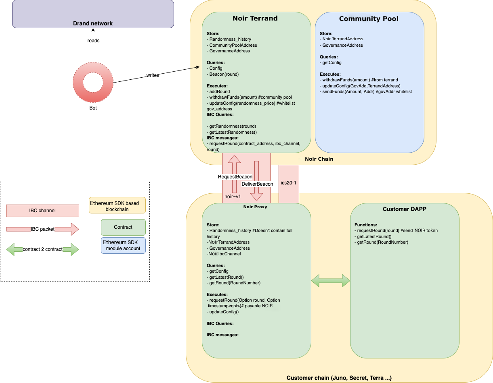

Our Approach
Noir Network aims to provide a safe and secure solution native to the IBC world and to provide the best possible user experience for a wide range of applications.
In contrast to other consensus algorithms, Tendermint-based blockchains do not need or provide randomness at block production layer. Therefore, for our first iteration, we are building our stack entirely on the application level of the chain (i.e. as a collection of smart contracts and offchain bots). This design decision makes it really easy for developers to use our technology since randomness can be consumed onchain only via the usage of a simple library.
Tendermint-based blockchains do not require or supply randomization at the block production layer, in contrast to other consensus methods. Consequently, for our initial iteration, we are totally constructing our stack at the chain's application level (i.e., as a collection of smart contracts and off-chain bots). Because of this design choice, randomness can only be consumed on chain through the use of a simple library, making it incredibly simple for developers to use our technology. Noir will employ random beacons created by the random network in its initial implementation. This network is supported by a group of players who use multi-party computation to generate unpredictability. There is a bijective mapping between the random round and the wall clock time because each unpredictability is tied to a round and provided periodically. The randomness is based on a BLS threshold signature structure, which generates numbers that are unpredictable and cannot be changed by any of the participants in the randomness. The [Legue of Entropy] loe, which created the dread mainnet, has been using it in production for more than two years. For instance, Filecoin uses drand for its storage proofs and block generation.
The next step in the evolution is to make drand beacons easily accessible by as many dapps as possible in a way that is easy to use and affordable. In an ideal world, a dapp developer would just do something like this:
#![allow(unused)] fn main() { // pseudo-code let beacon: [u8; 32] = await getNextRandomness(); let [dice1, dice2] = ints_in_range(randomness, 1..=6); let double_dice = dice1 + dice2; }
In an ecosystem that is getting ready for thousands of separate and connected blockchains, we think the burden of draconian verification implementation once per contract or even once per blockchain is excessive. The Noir chain, which is accessible via IBC, serves as the randomness layer in the Ethereum ecosystem rather than carrying out the random verification on the dapp's chain.
Architecture
 Multiple actors are involved in the Noir system:
- Noir validators: these are the nodes that create and validate blocks on our chain. They are responsible for executing the transactions and run a consensus on the output.
- Noir bots are responsible for fetching the randomness from the drand network and submit it to the Noir Oracle contract that verifies it.
- Noir Oracle contract contains the logic to verify a drand randomness, but also to incentivize the Noir bots and is the recipient of any IBC messages made on other chains.
- Noir proxy contract lives on any end user chain (e.g. Juno, Stargaze, Osmosis) and is the main entry point for users to fetch randomness from.
- IBC relayers are responsible for relaying the randomness from the Noir Oracle contract to the Proxy contract.
Workflow
The following steps are taken to get the randomness:
- A contract on a EthereumWasm-enabled chain sends a message to a Noir proxy contract on the same chain.
- The proxy contract sends an IBC message to its counter-part on the Noir Network, where the job is put in the queue.
- Once the drand beacon of the correct round is released, Noir bots send it to the Noir smart contract for verification, as a transaction.
- After successful verification, the pending jobs for the round are processed. For every matching job, an IBC response with the beacon is sent, thanks to the IBC relayers.
- The proxy contract receives the beacon and sends a callback to the original contract.